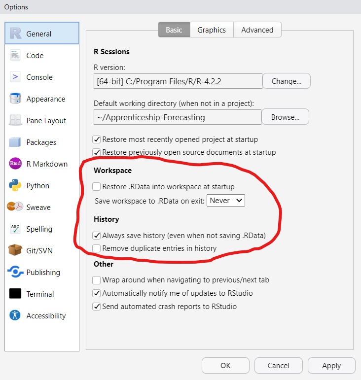

Bad
table_totalcost <- costs %>%
group_by(Category) %>%
summarise(Cost = sum(Cost))
model_for_use_later_on <- lm(Cost ~ Time, data = costs)
read_data_func <- function(path) {
readr::read_csv(path, id = "filepath", na = "N/A")
}Code/project structure (e.g. 01-modelling.R -> 02-plots.R -> 03-export.R )
Code formatting
<- vs =Wider principles like…
Styling is about making your work easy to understand without changing its function
Good coding style is like correct punctuation: you can manage without it, butitsuremakesthingseasiertoread
-Introduction to the Tidyverse Style Guide
Styling makes writing code easier (less decisions to make)
Styling makes reading code easier
Styling makes it easier to avoid bugs


2019: Started coding in R
2020-2021: Had some kind of set of conventions specific to myself
2022: Started religiously following the Tidyverse style guide
2023: Life is great
Names for things like dataframes, vectors, values etc should be noun-like, e.g. costs, costs_summary, costs_uplift_factor etc
Names for functions should be verb-like, e.g. filter(), standardise_names() , extract_coefficients() etc
lower_snake_case should be preferred in most casesTitle_Snake_Case works well for column namescamelCase in other packages, but you shouldn’t use it unless you’re doing serious object-oriented programmingR has rules for names:
They must only include letters and numbers _ and ., and must start with a letter or .
Other names must be surrounded by backticks:
# Good ('syntactic')
iris_proportions <- mutate(iris, across(1:4, ~ . / sum(.)))
# Bad: starts with a number
`01_iris_proportions` <- mutate(iris, across(1:4, ~ . / sum(.)))
# Bad: contains a non-alphanumeric character
`iris_%s` <- mutate(iris, across(1:4, ~ . / sum(.)))
# Bad: contains a space
`iris proportions` <- mutate(iris, across(1:4, ~ . / sum(.)))When your data has non-syntactic column names, clean these up ASAP!
While names like my.data are allowed, avoid this naming style. Use my_data instead.
Number your comments if it makes sense
Prefer infrequent, detailed comments over frequent ones which are overly terse
# ~~ Prepare data for plotting ~~~~~~~~~~~~~~~~~~~~~~~~~~~~
# 1. Create a column for the car name
# 2. Apply tibble format for nicer printing
# 3. Order cars by efficiency (mpg) for plotting later
# ~~~~~~~~~~~~~~~~~~~~~~~~~~~~~~~~~~~~~~~~~~~~~~~~~~~~~~~~~
plot_data <- mtcars %>%
rownames_to_column("car") %>%
as_tibble() %>%
mutate(car = fct_reorder(car, mpg))Fencing comments suggests a new ‘section’. This can help guide the reader to the most important information.
Give each comment its own line unless there’s a really good reason not to
Don’t needlessly abbreviate things - use full sentences
Use the imperative mood for short comments:
Good (imperative mood):
# Remove rows where Cost is NA
Bad (indicative mood?):
# Removing rows where Cost is NA
If your code is more than 50% comments consider switching to Quarto/R Markdown
Prefer packages which are widely used by other colleagues. Make sure you trust the packages you’re using!
Learn a bit about a package before using it. If it’s not well documented or maintained, find another approach.
Especially applies to packages used in answers on Stackoverflow
Tip: packages which have websites linked from GitHub are usually good!
Read a function’s documentation using help(pkg::fun) or ?pkg::fun. If a function is superseded or deprecated, use the recommended new approach.
Always use <- for assignment, not = or ->
You should (almost) never use <<- - there’s (almost) always a better approach
Space stuff out! E.g. 1 / (a + b + c) is better than 1/(a+b+c)
Only use return() for early returns; don’t put it at the end of every function
Write TRUE and FALSE, not T and F
Don’t comment out old code - delete it
Rewrite your code! Code you write once and never change isn’t likely to be very clear.
Design is about making your code consistent, composable and reusable
Styling can be boiled down to a set of rules - design is more of an art
In R, good code design is mostly about writing good functions
Example: dplyr::select() is a masterclass in design:
Both code chunks take the iris dataframe and select the Species column plus all columns which begin with "Sepal". Which is clearer?
Repeating code is bad - defining functions is the answer
This takes practice but makes code much easier to read and maintain
Bad
# Rescale a, b, c, and d to be between 0 and 1
df %>%
mutate(
a = (a - min(a, na.rm = TRUE)) /
(max(a, na.rm = TRUE) - min(a, na.rm = TRUE)),
b = (b - min(b, na.rm = TRUE)) /
(max(b, na.rm = TRUE) - min(a, na.rm = TRUE)),
c = (c - min(c, na.rm = TRUE)) /
(max(c, na.rm = TRUE) - min(c, na.rm = TRUE)),
d = (d - min(d, na.rm = TRUE)) /
(max(d, na.rm = TRUE) - min(d, na.rm = TRUE))
)
Code-based approaches work best when reproducibility is a focus
So, strive to clearly delimit each stage of your pipeline, and make prerequisites obvious:
Data import (sources and access requirements should be obvious)
Data cleaning (successful 1. is prerequisite)
Modelling/analysis (successful 1. and 2. are prerequisite)
Outputs (successful 1., 2. and 3. are all prerequisite)
Periodically restart your R session (Shift + Ctrl + F10) and rerun your code to make sure all stages still run together successfully
.RDataBy default, RStudio will save and reload your R session from a .RData file. This discourages a reproducible workflow, so disable this feature! (RStudio -> Tools -> Global Options -> General)
Generally avoid saving R objects with save() and saveRDS(). It’s better to put a bit more work in to export to CSV, Excel or SQL.

Create a new RStudio project for each new piece of work
A project is defined by the presence of a file with the .Rproj extension. This tells RStudio that everything in the folder is part of the project.
setwd() as this can result in code which other people can’t run. Instead, use relative filepaths.Use a sub-directory R/ for your production R scripts
Write a README.md file for each project explaining its purpose and steps to get started using it
For long-term projects, or ones which are on hold, use {renv} to keep track of dependencies
janitor::clean_names()clean_names() is a very quick and easy way to make syntactic column names. Use it!
Getting Title_Snake_Case is possible, but not obvious from the documentation
Renaming is lossy, so check the result
messy_df <- data.frame(
pupilNumber = 1:2,
`cost 2022` = 1234,
`% totalFunding` = c(0.4, 0.6),
`<50% funding` = c(TRUE, FALSE),
check.names = FALSE
)
messy_df
#> pupilNumber cost 2022 % totalFunding <50% funding
#> 1 1 1234 0.4 TRUE
#> 2 2 1234 0.6 FALSE
messy_df %>%
janitor::clean_names()
#> pupil_number cost_2022 percent_total_funding x50_percent_funding
#> 1 1 1234 0.4 TRUE
#> 2 2 1234 0.6 FALSE
messy_df %>%
janitor::clean_names(case = "title", sep_out = "_")
#> Pupil_Number Cost_2022 Percent_Total_Funding X50_Percent_Funding
#> 1 1 1234 0.4 TRUE
#> 2 2 1234 0.6 FALSEstyler::style_file(){styler} is a powerful tool to use sparingly. Some reasonable use-cases:
Re-style a project you inherit
Re-style your own old projects after seeing this presentation
messy-code.R
#load packages
library(tidyverse);library(lubridate)
data_raw=read_csv( "some_file.csv" )
data_clean<-data_raw %>%
mutate(Amount=Amount/sum(Amount),
#Combine date parts into single column
Date=make_date(Year, Month,Day))%>%
filter(
# other years aren't relevant to analysis
year(Date)==2020,
Amount> 0.1
)
ggplot2(data_clean,aes(Date,Amount))+geom_line()styler::style_file("messy-code.R")
# load packages
library(tidyverse)
library(lubridate)
data_raw <- read_csv("some_file.csv")
data_clean <- data_raw %>%
mutate(
Amount = Amount / sum(Amount),
# Combine date parts into single column
Date = make_date(Year, Month, Day)
) %>%
filter(
# other years aren't relevant to analysis
year(Date) == 2020,
Amount > 0.1
)
ggplot2(data_clean, aes(Date, Amount)) + geom_line()lintr::lint(){lintr} is similar to {styler}, but it tells you about issues instead of fixing them.
Good for maintaining already well-styled code, not so good for restyling old code
Highly customisable, e.g. if you want to relax/not apply some rules
RStudio’s UI lets you click through to address individual lints
messy-code.R
#load packages
library(tidyverse);library(lubridate)
data_raw=read_csv( "some_file.csv" )
data_clean<-data_raw %>%
mutate(Amount=Amount/sum(Amount),
#Combine date parts into single column
Date=make_date(Year, Month,Day))%>%
filter(
# other years aren't relevant to analysis
year(Date)==2020,
Amount> 0.1
)
ggplot2(data_clean,aes(Date,Amount))+geom_line()| Shortcut | Action |
|---|---|
Ctrl + I |
Correct indentation |
Alt + Ctrl + Shift + M |
‘Rename in scope’, e.g. change myVar to my_var |
Ctrl + Shift + F |
Find (and replace) throughout multiple files |
Ctrl + Shift + / |
Wrap long comments over multiple lines |
Alt + - |
Insert <- with the correct spacing |
Ctrl + Shift + M |
Insert %>% with the correct spacing |
Alt + Ctrl + Shift + R |
Inserts template function documentation |
Alt + click/drag |
Activate multiline cursor |
Note: You can use Tools -> Keyboard Shortcuts Help for a full list of shortcuts
The Tidyverse style guide: https://style.tidyverse.org/
The Tidyverse design guide: https://design.tidyverse.org/
Workflow: code style (R for Data Science): https://r4ds.hadley.nz/workflow-style.html
The {styler} package: https://styler.r-lib.org/
The {lintr} package: https://lintr.r-lib.org/
The {usethis} package for project/package setup: https://usethis.r-lib.org/
The {devtools} package for package development: https://devtools.r-lib.org/
The {testthat} package for unit testing: https://testthat.r-lib.org/
Comments: what should they say?
If a comment is needed, it should explain the why, not the what/how (if what your code does isn’t clear, you should probably rewrite it).